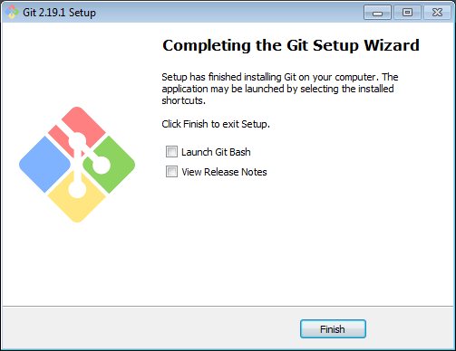

1 : Descargar Git para Windows desde la página de descargas oficial: Git for Windows downloads. Al finalizar la descarga, lanzar el ejecutable:
2 : Autorizar la instalación
3 : Aceptar la licencia GPLv2
4 : Dejar la carpeta de instalación por defecto
5 : Seleccionar los componentes de instalación por defecto. En este caso sólo he agregado la opción para utilizar fuentes TrueType en todas las consolas
6 : Especificar una carpeta en el menú de inicio, por defecto es "Git":

7 : Luego seleccionar el editor de texto por defecto para Git.
8 : Finalizado

Fuentes